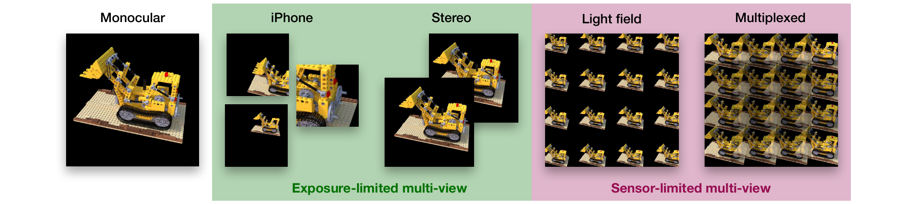
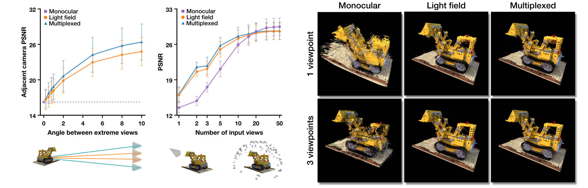
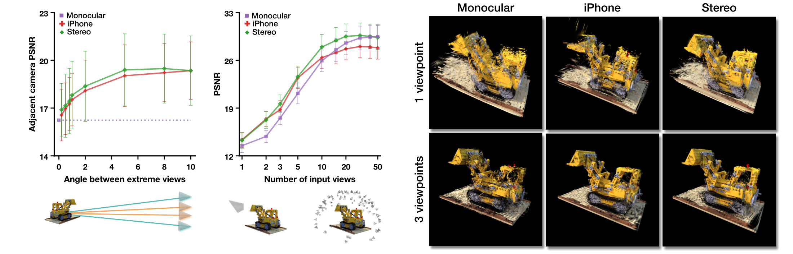
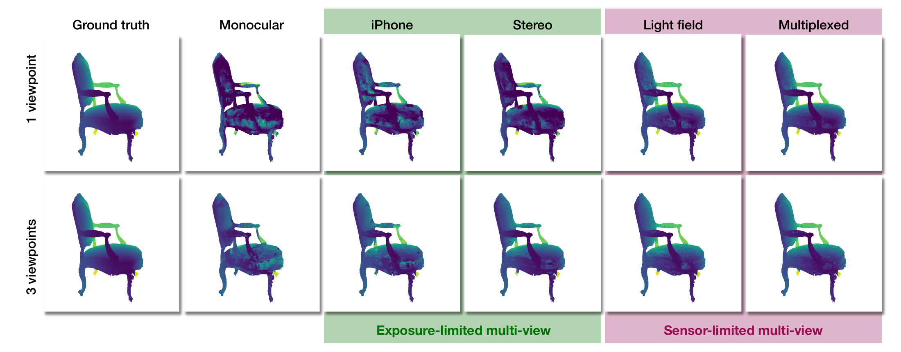
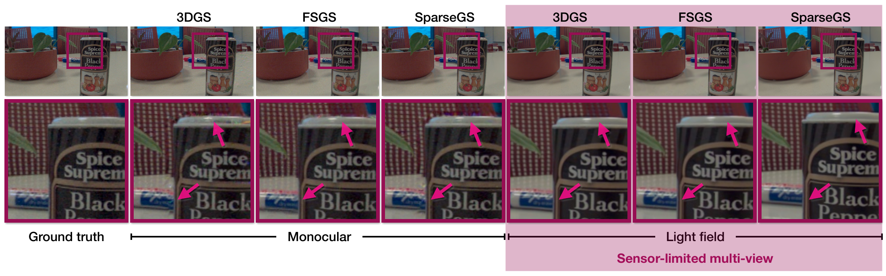
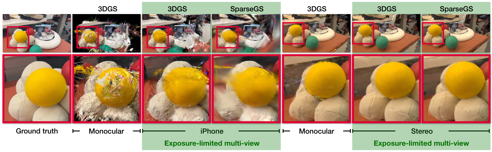
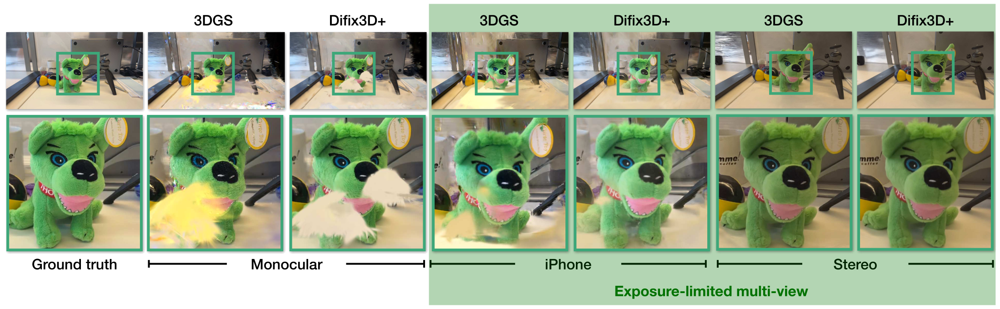
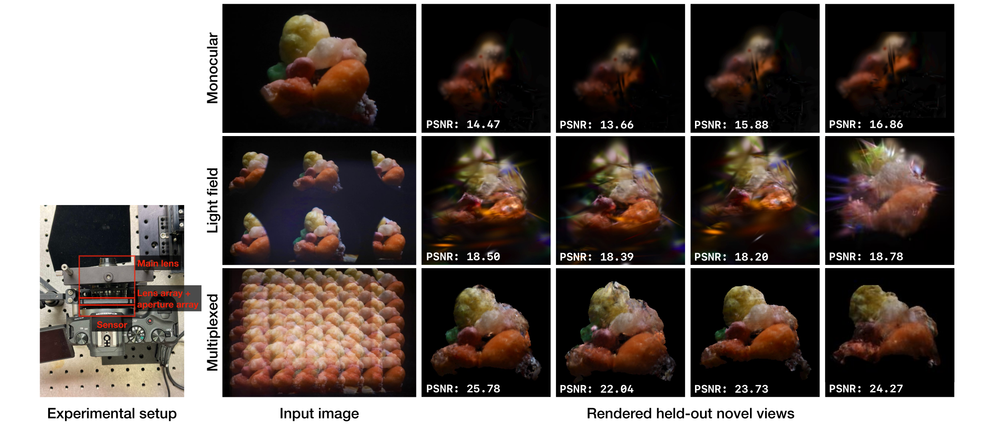

Many consumer smartphones, stereo cameras, and light field cameras record multiple synchronized viewpoints in a single exposure event. However, novel view synthesis pipelines commonly use only a monocular stream and rely on camera motion or learned priors to obtain angular coverage. In this paper, we ask: why do we use only one viewpoint? We analyze sensor-limited multi-view, where one sensor trades off spatial and angular resolution, and exposure-limited multi-view, where multiple sensors on one commodity device observe each event simultaneously. We introduce a new dataset incorporating three types of commodity multi-view cameras, and evaluate sparse-view 3DGS and 4DGS baselines measuring reconstruction quality as a function of number of exposures and angle between extreme views. Our results demonstrate that using multiple cameras—even with a low baseline—significantly improves reconstruction quality in single-shot, few-shot, and casual video settings. In addition, under a fixed sensor budget, angular sampling improves reconstruction when exposures are scarce despite lower spatial resolution. The gains are most pronounced for single-shot and dynamic scenes, where a stationary monocular camera lacks the angular diversity to recover scene geometry and motion.
Because no dataset compares multiple camera types on the same scenes, we collect and release two real-world datasets comprising 16 scenes (8 static, 8 dynamic). Each scene is captured by an iPhone 15 Pro (3 views per exposure), an Apple Vision Pro (stereo), and a Lytro Illum light field camera (81 views per exposure).

Both light field cameras outperform monocular capture under the same sensor budget when exposures are scarce. This demonstrates that angular diversity outweighs spatial resolution when views are limited. Multiplexing further improves performance, even when the additional spatial resolution is achieved through overlapping. As the number of exposures grows, all designs converge in performance.


To evaluate geometric fidelity, we compare predicted depth against ground truth on the NeRF Synthetic scenes. All four light field sampling cameras reduce geometric error relative to monocular capture at both exposure counts, with the largest improvement provided by the light field and multiplexed light field models.

We reconstruct the static scenes in our dataset from a single exposure per camera and compare each device against its own monocular baseline on held-out evaluation views.


Both multi-view cameras show improvements over their monocular counterparts. The gains are smaller than in the single-exposure and dynamic settings, which is expected: the value of multi-camera input is largest in regimes where monocular capture is most constrained, and smallest when casual video already supplies sufficient angular diversity.

We reconstruct each dynamic scene using 4DGS, comparing each device's multi-view stream against its own monocular stream. The gains are largest in this setting because sequential monocular exposures observe different scene states. Monocular input smears motion, whereas synchronized multi-camera input recovers geometry and dynamics.
We build a multiplexed light field camera in which higher-resolution sub-lens images overlap on the sensor. On real captures, it outperforms both monocular and standard light field capture from a single exposure, illustrating the benefit of joint camera and reconstruction design.

@inproceedings{li2026sparse,
author = {Li, Shamus and Cao, Ruiming and Waller, Laura and
Monakhova, Kristina and Fridovich-Keil, Sara},
title = {Sparse Light Field Sampling Improves Casual {3D} and {4D} Reconstruction},
booktitle = {Computer Vision -- {ECCV} 2026 Workshops},
year = {2026},
}